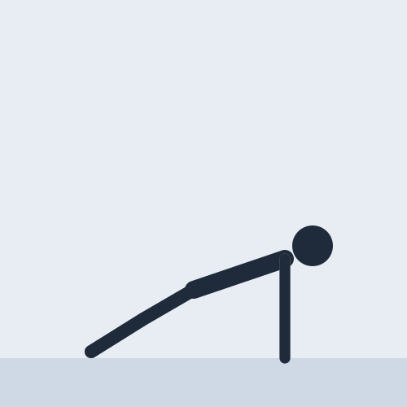
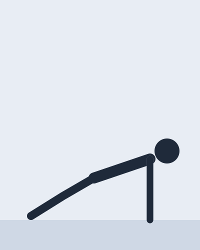
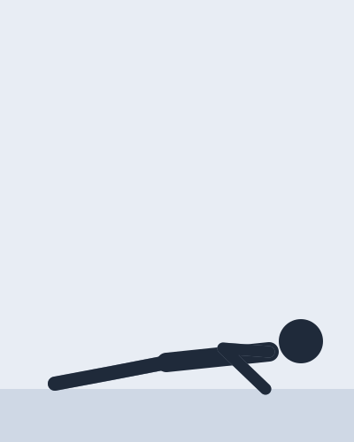
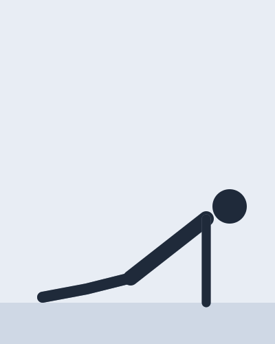
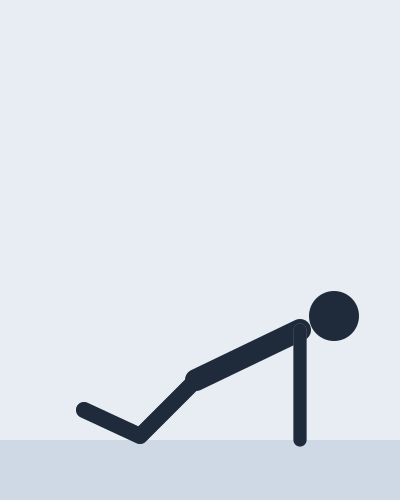

Chest and arms · 5 min

The plank that moves: chest, shoulders and arms, with the whole body held in one line.
Pushing strength anywhere, and a plank at the same time: if the hips sag, the trunk is the weak link, not the arms.
A demo sheet: on yours, this note says what the video actually gives.

1Arms straight, feet together, the body stiff as a board.

2Two seconds down, until the chest is a fist above the floor.
Push the floor away and come back to the plank in one piece.
↻ Stop the set when the hips lead or the chest no longer goes down.

The lower back takes the load. Squeeze the glutes, or move to the knees.

4Knees on the floor, hips forward: the same line from head to knees.